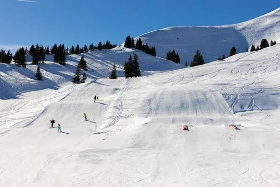
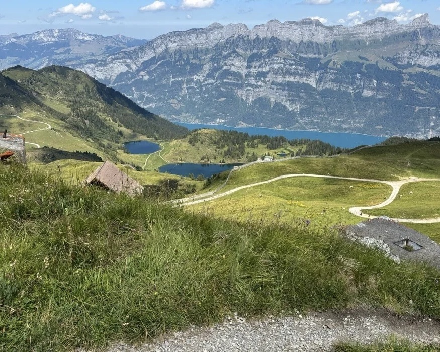
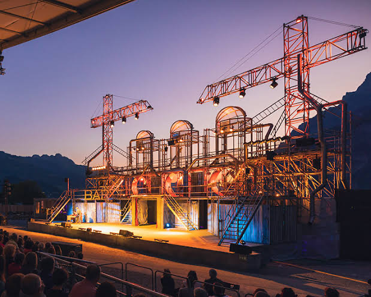
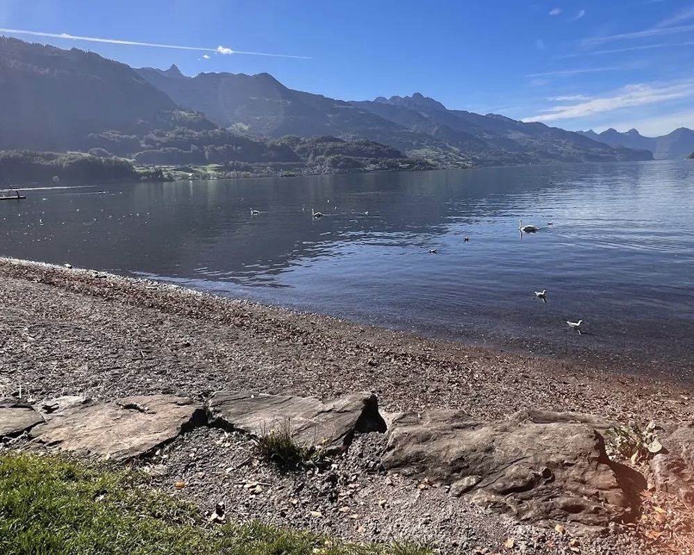

Local Attractions near our inn

Flumserberg
Only 16km away from Walenstadt, Flumserberg is a resort area that features skiing areas during the winter, and several different hiking and biking trails during the summer.
Walensee-Bühne
The Walensee-Bühne is an open air theater venue located on the shores of Lake Walen. This open-air local theater often holds produtions of popular shows, with the Churfirsten mountains providing a scenic, natural backdrop.
Strandbad
Strandbad is a public outdoor swimming area and pebbel beach that's located on the shores of lake Walen. The beach features a sports field, picnic areas with grills, and access to water activities such as paddleboarding and kayaking.


